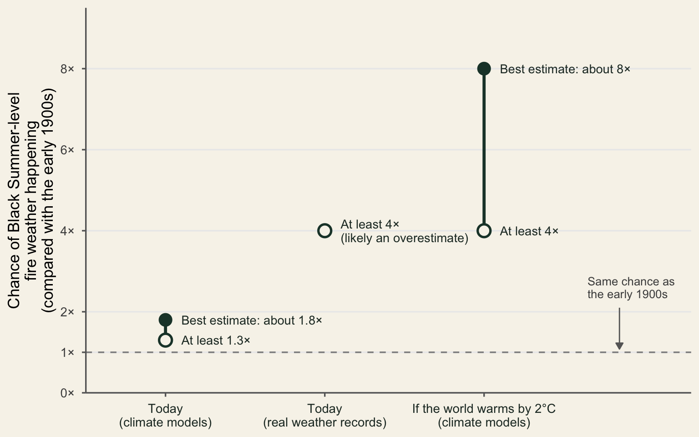

In southeastern Australia, the extreme fire weather behind the 2019–20 Black Summer bushfires is no longer as rare as it once was. If we count the chance of it happening in any given year in the early 1900s as 1, climate models put today’s chance at about 1.8. If global warming reaches 2°C, that chance could rise to about eight times the early-1900s level (van Oldenborgh et al. 2021).
Black Summer showed how dangerous extreme fire weather can be
Black Summer burned more land near towns and cities than any bushfire season before it. Between late 2019 and January 2020, the fires killed at least 34 people, destroyed about 5,900 buildings and burned at least 19.4 million hectares (van Oldenborgh et al. 2021). They followed Australia’s hottest and driest year on record (Bureau of Meteorology 2020).
For anyone living near the bush, those fires raise an unsettling question: was Black Summer a once-in-a-lifetime disaster, or a sign of things to come? Answering that question means asking two things: is fire weather this extreme becoming more common, and what is driving it?
A team of 17 researchers set out to find out (van Oldenborgh et al. 2021). They focused on southeastern Australia, where the fires were particularly severe. They then compared two periods: today, and the early 1900s, before most human-caused warming. For each, they estimated the chance of Black Summer-level fire weather happening in any given year.
By “fire weather”, the researchers mean the weather conditions that make bushfires more dangerous: heat, dry air, wind and a lack of rain. They looked only at the weather, not at how fires start or how much bush there is to burn.
The researchers report their results as “times as likely”. For example, if Black Summer-level fire weather were twice as likely, you could expect a season like it twice as often as in the early 1900s. The rest of this post looks at how much more likely this fire weather has become, what is driving the change, and what it means for you.
Dangerous fire weather is already more likely than a century ago
To measure how much more likely this fire weather has become, the researchers used two kinds of evidence. The first is weather records for southeastern Australia from 1979 to 2020. These records come from a dataset called ERA5, which pieces together past weather from real observations. The second is four climate models: computer simulations that can recreate both today’s climate and the cooler climate of the early 1900s. Using both kinds of evidence lets the researchers check one against the other.
Both kinds of evidence point the same way: Black Summer-level fire weather is more likely than it was in the early 1900s. On the same scale as before, where the early 1900s counts as 1, the climate models’ best estimate of today’s chance is about 1.8, or nearly double. At the very least, it is 1.3, almost a third higher than back then. The weather records, on the other hand, suggest a much bigger jump: at least 4, meaning four times the early-1900s chance. Figure 1 shows how far each estimate sits above the early-1900s level.
The two estimates differ because each has a known weakness, and the weaknesses pull in opposite directions. Climate models tend to underestimate how much extreme heat has increased, so their figures are likely too low. The weather records start only in 1979 and include an unusually dry stretch that does not appear in rainfall records going back to 1900, so their figure is likely too high. The true increase is therefore probably larger than the climate models suggest, but smaller than the weather records show.
The chance could keep rising as the world warms. If global warming reaches 2°C, the climate models put the chance of Black Summer-level fire weather at about 8 on the same scale, and at least 4. This figure comes from only two of the four climate models tested, so it is less certain than the figures for today. Like the other climate model estimates, it may also be too low.
Together, these results answer the first question from the start of this post: Black Summer was not a one-off. Fire weather this extreme has already become more common, and it is likely to become more common still. The next question is why.
Rising heat is doing most of the work
To understand what is driving the change, it helps to look more closely at the four fire weather ingredients mentioned earlier. Each makes fires more dangerous in its own way: heat dries out leaves, grass and fallen branches so they burn more easily; dry air pulls moisture out of plants; a lack of rain keeps the bush dry for longer; and wind pushes fires forward and carries embers.
Of these four ingredients, heat matters most. It is the biggest cause of rising fire danger in the weather records and in three of the four climate models, as Table 1 shows by ranking each ingredient. Extreme heat itself has become more common too: a hot week like the one in December 2019 is at least twice as likely as it was in the early 1900s. Dry air comes second, adding to the effect of heat.
| Weather ingredient | How many of the 4 climate models found it the biggest cause (ties counted) | Rank in real weather records (1 = biggest cause) | What the study found |
|---|---|---|---|
| Heat | 3 | 1 | Explains about half of the rise in fire danger in two climate models |
| Dry air (low humidity) | 2 | 2 | Biggest cause in one climate model, and tied for biggest in another |
| Rainfall and drought | 0 | 3 | Ranks third, likely because recent decades happened to be dry; no long-term climate change trend |
| Wind | 1 | 4 | Tied for biggest cause in one climate model; small everywhere else |
Rainfall, however, tells a different story. Australia had its driest year on record in 2019, yet the researchers found no climate change trend in droughts this extreme. More than half of the 2019 dry spell came from natural swings in ocean and wind patterns, known as the Indian Ocean Dipole and the Southern Annular Mode.
So the answer to the second question is clear: human-caused climate change is making hot weather more extreme, and that heat is the main reason fire danger is rising. Dry years like 2019 will still happen naturally, but each one arrives in a hotter climate than a century ago.
Before looking at what this means for you, it helps to know what these results can and cannot tell us.
The results describe fire weather, not the whole fire risk
These findings come with some important limits. As mentioned at the start, the study looked only at the weather. This limit matters because whether a fire actually starts, and how bad it gets, also depends on things the study did not measure, such as lightning or people starting fires, how much dry vegetation there is to burn, and how well communities and fire services are prepared.
Two further limits are worth knowing. The results cover only southeastern Australia, so they may not apply in the same way to other parts of the country. And not every climate model handled extreme weather equally well: in two of the four models, the gap between calm and dangerous fire seasons was bigger than in the real weather records, which makes their estimates less reliable.
With these limits in mind, here is what the findings mean if you live near the bush.
Past fire seasons are no longer a reliable guide
This post began with a question: was Black Summer a once-in-a-lifetime disaster, or a sign of things to come? The evidence points to the second. Climate change has already made Black Summer-level fire weather more likely in southeastern Australia, with climate models putting today’s chance at about 1.8 times what it was in the early 1900s (van Oldenborgh et al. 2021). Rising heat is the main reason, while the dryness of 2019 was largely natural. If global warming reaches 2°C, this kind of fire weather could become about eight times as likely as it was a century ago.
For people living near the bush, these findings mean past fire seasons are no longer a reliable guide to what lies ahead. The researchers also point out that people in bushfire areas are often not aware of their risk, and that during the 2009 Black Saturday fires, many people did not have a fire plan (van Oldenborgh et al. 2021). Knowing that dangerous fire weather is becoming more common is a good reason to make a bushfire plan before the next fire season, and to follow advice from your local fire service.
References
Bureau of Meteorology. 2020. Annual Climate Statement 2019. https://www.bom.gov.au/climate/current/annual/aus/2019/.
van Oldenborgh, Geert Jan, Folmer Krikken, Sophie Lewis, et al. 2021. “Attribution of the Australian Bushfire Risk to Anthropogenic Climate Change.” Natural Hazards and Earth System Sciences 21 (3): 941–60. https://doi.org/10.5194/nhess-21-941-2021.